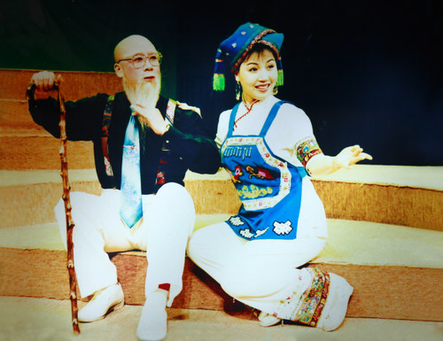

桂剧是广西主要地方剧种，有着较悠久的历史，约在明代中叶便开始发端，它以弹腔为主，兼唱高腔、昆腔、吹腔及杂腔小调等五种声腔艺术。桂剧用桂林方言演唱，唱腔委婉动人、清澈明亮，表演侧重做工，注重以细腻而富于生活气息的表演手法塑造人物，具有浓郁乡土气息。
桂剧的传统剧目，艺人中间素有"大小本杂八百出"之说，其中约 80 %为弹腔剧目。大部分是历史故事，多在庙会草台连本演出，表演粗犷质朴。如刀马旦的"马步"和武生的"紫金冠",特色显着，为人称道。在城市演出，则以"三小戏"为主，表演细腻，造诣较高。

每个人看到自己家乡的地方戏，都会有一种发自心底的亲切感。这和许多地方戏用自己方言吟唱是分不开的。地方戏深深扎根于产生它的家乡，与家乡的一草一木都有着密切的联系，它的成长与家乡有着密不可分的影响。
从清代中叶至20世纪上半叶，桂剧一直是广西流行地域最广、影响最大的戏曲剧种，也是最能体现桂林文化特质，展现桂林人风貌的一种传统艺术。它的形成、发展，在一定程度上也体现了桂林的社会思想文化、民风民俗的形成演变过程，具有重要的历史学、社会学及文化学研究价值。
桂剧也以它独有的艺术形式，深刻的融入桂林人的日常生活之中。有老桂林人回忆：我想到幼年时代，骑在大人的肩脖上，到漓江岸边，定桂门的露天大戏台看戏的往事。在戏台前边的空地上，在拥挤的人群中，安然自在地观看戏台上的表演，真是童年一乐，是难得的享受。
桂剧是根植于桂林民间的艺术，发生发展于桂林的青山秀水之间。桂林历史上的重大事件、知名人士、风物名胜乃至风俗民情、方言俗语，无一不是桂剧舞台重点表现、努力渲染的对象，具有鲜明桂林人性格特征的士农工商、贩夫走卒等，为桂剧艺术画廊留下了令人难忘的艺术形象。
近年来，桂剧更是创作了一大批以桂林历史事件为题材的剧目，《灵渠长歌》、《瑶妃传奇》、《大儒还乡》、《何香凝》等，广受好评。
此外，在长期的艺术实践中，桂剧艺人创造出许多精彩绝伦的表演技艺。比如《打棍出箱》，不单桂剧有，京剧有，其他地方剧种也有。然而，剧坛公认，广西桂剧的《打棍出箱》技艺卓绝，首屈一指。